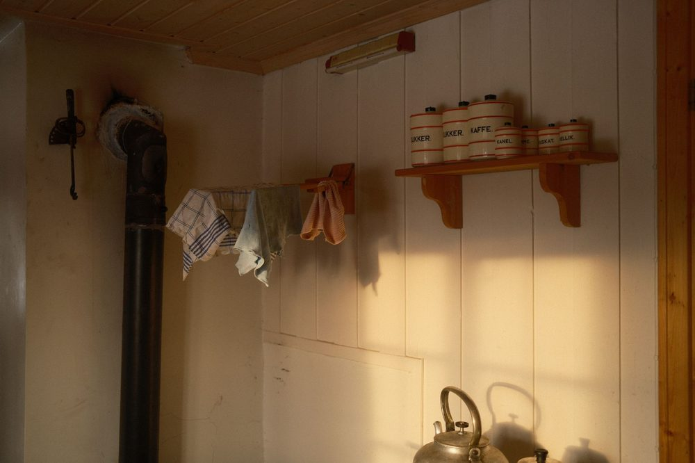

Understanding Kitchen Pest Behavior
In this apartment
In a 1BHK apartment in Pune, resident Aditi notices crumbs accumulating near her refrigerator. She often finds small specks that she dismisses as normal kitchen debris. After reading about pest behavior, she decides to observe the area more closely.
Pests are not random; they follow predictable patterns that can be observed.
Most infestations start small, then accelerate out of sight. Early activity is quiet, concentrated near food or moisture, and easily mistaken for normal kitchen debris. If you only react to large signs, like seeing a cockroach in daylight or fruit flies hovering over a bin, you are already late. Delay increases costs in spoiled inventory, sanitization time, and potential food safety risks.
Pests enter through specific routes, foraging along walls and edges, nesting in warm voids, and visiting the same resource points. The first indicators are subtle, such as a pepper-like speck near the refrigerator gasket or a faint vinegar scent near the fruit bowl. Without a simple framework, you will either miss true indicators or waste time chasing false positives.
Behavior-based observation uses patterns, not guesswork. Instead of asking if a speck is a pest, you ask if multiple small indicators align in place and time. This approach allows you to focus on the traces pests leave while they travel and feed.